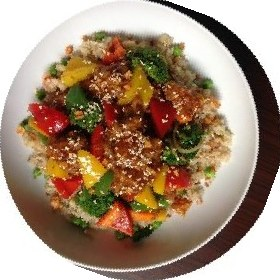

Review queue
34 waiting · oldest first · 9 waiting over 3 days
 Sea Moss & SpiceWaiting 9 days
Sea Moss & SpiceWaiting 9 days- Paramaribo PotWaiting 8 days
- Souse & SorrelWaiting 7 days
- Review of Lambie Lane by Winston G.Waiting 6 days
 Conkie CornerWaiting 6 days
Conkie CornerWaiting 6 days- Cassava Pone Co.Waiting 5 days
- Accra & FloatsWaiting 5 days
 Bammy Bros. renamed to Bammy Brothers CateringWaiting 4 days
Bammy Bros. renamed to Bammy Brothers CateringWaiting 4 days Auntie Bev’s KitchenWaiting 3 days
Auntie Bev’s KitchenWaiting 3 days- Review of Griot & Pikliz by Chantal D.Waiting 3 days
 Breadfruit & ButterWaiting 2 days
Breadfruit & ButterWaiting 2 days- Review of Maracas Bay by Devon W.Waiting 2 days
- Garlic Pork Co.Waiting 2 days
 Pelau House renamed to Pelau House by KendraWaiting 1 day
Pelau House renamed to Pelau House by KendraWaiting 1 day Flying Fish KitchenWaiting 1 day
Flying Fish KitchenWaiting 1 day- The Very Long Name Jamaican Jerk, Patty & Festival Kitchen of BramptonWaiting 1 day
- Island PotWaiting 6 hours
- Review of Sugar Dumplin by Priya R.Waiting 2 hours

Fungee & PepperpotWaiting 40 min- Review of Roti Road by Omar H.Waiting 12 min